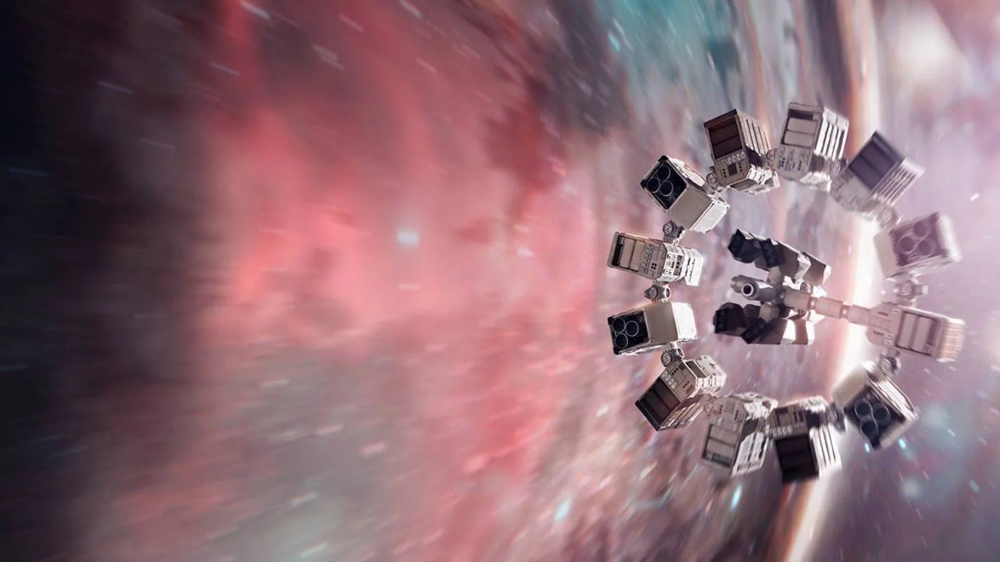
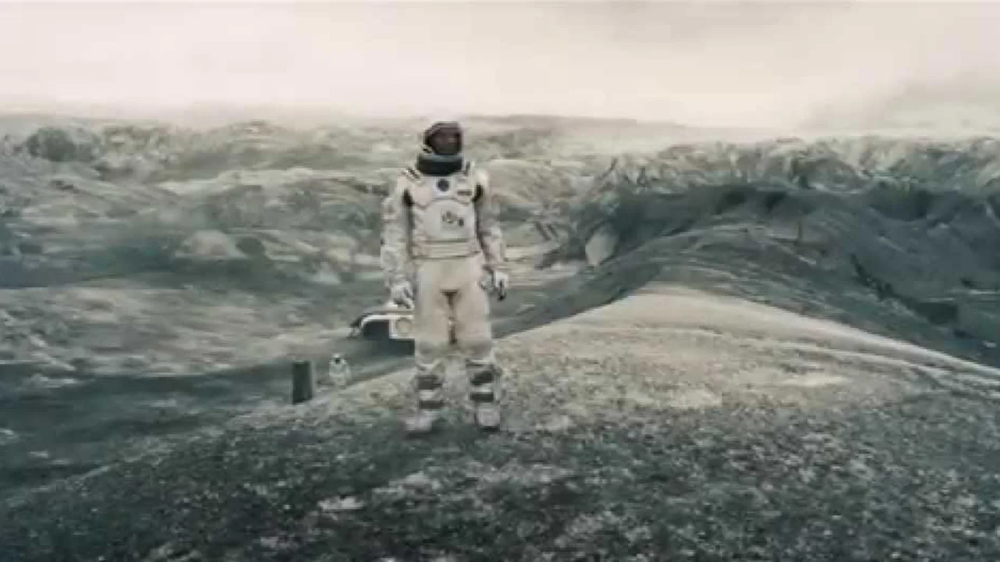
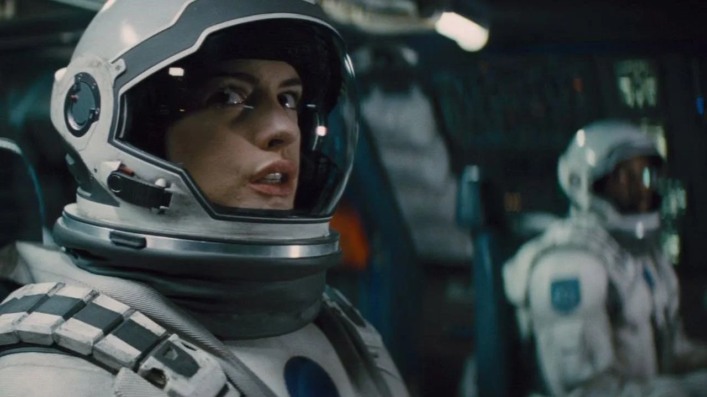
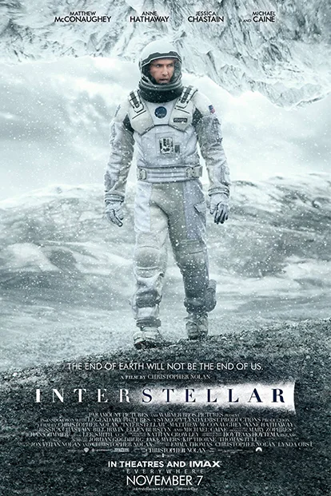
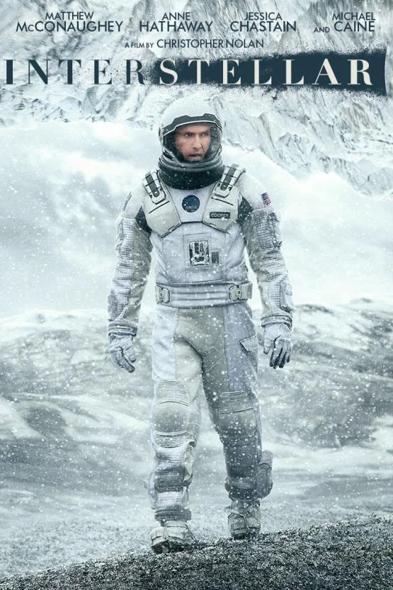

01 / ESPAÇO
Além da nossa galáxia
Uma expedição cruza um buraco de minhoca em busca de possibilidades para o futuro.
UM FILME DE CHRISTOPHER NOLAN
Além do que
podemos imaginar.
Uma viagem pelo espaço.
Uma história sobre o que nos conecta.

01 / UM NOVO HORIZONTEA HISTÓRIA
Com a Terra se tornando cada vez menos habitável, um grupo de exploradores parte em busca de um novo lar para a humanidade.
Cooper, piloto e pai de dois filhos, precisa escolher entre ficar com sua família e atravessar os limites do espaço conhecido. A missão é imensa. O que ele deixa para trás também.
Conheça o universo do filmeCADA DETALHE É UMA DESCOBERTA
Explore os caminhos que fazem
essa jornada ser inesquecível.

Uma expedição cruza um buraco de minhoca em busca de possibilidades para o futuro.
Distâncias e gravidade transformam o tempo no recurso mais precioso da missão.

Mesmo a anos-luz de casa, vínculos e escolhas continuam a orientar a jornada.

Um piloto que leva consigo a coragem de explorar e a vontade de voltar para os filhos.
Uma cientista que enfrenta o desconhecido em busca de um lugar onde a vida possa continuar.
A filha de Cooper cresce entre perguntas, lembranças e a determinação de encontrar respostas.
Uma narrativa que une a escala de uma aventura espacial à intimidade de uma família.
Os irmãos Nolan constroem uma história sobre sobrevivência, escolhas e passagem do tempo.
Uma trilha que acompanha o silêncio do espaço e a intensidade da experiência humana.
DISTÂNCIA É SÓ O COMEÇO
Uma experiência para ver, sentir
e continuar pensando depois dos créditos.
PREPARE A SUA SESSÃO
Escolha como começar.
Um primeiro olhar para o filme, direto do canal oficial da Warner Bros. UK & Ireland.
TRAILER OFICIALAssistir no YouTube ↗ (nova aba)Consulte as opções de streaming, aluguel e compra disponíveis no Brasil.
2 HORAS E 48 MINUTOSConsultar onde assistir ↗ (nova aba)Explore as informações da produção e os materiais oficiais de Interestelar.
LEGENDARY PICTURESConhecer a produção ↗ (nova aba)A disponibilidade, os preços e os dispositivos compatíveis dependem do serviço escolhido. Consulte as condições na plataforma.

POR TRÁS DA JORNADA
Uma aventura de ficção científica com a assinatura de Christopher Nolan, um elenco marcante e a música de Hans Zimmer.
ASSISTA DO SEU JEITO
Encontre o filme no serviço de sua preferência
e confira os aparelhos compatíveis com a plataforma.
Para uma sessão
com clima de cinema.
Explore a história
no seu navegador.
Sua próxima viagem
ao alcance das mãos.
Confira os aplicativos
disponíveis no aparelho.
ANTES DE EMBARCAR
O essencial para começar
a sua jornada.
Em uma Terra ameaçada pela escassez de alimentos, Cooper se junta a uma missão espacial para encontrar um novo lar para a humanidade. O filme acompanha essa busca e os laços que o conectam à sua família.
Interestelar tem 168 minutos, ou 2 horas e 48 minutos.
Christopher Nolan dirigiu o filme e escreveu o roteiro com Jonathan Nolan. A trilha sonora foi composta por Hans Zimmer.
Use o botão Consultar onde assistir para verificar o catálogo brasileiro no JustWatch. A disponibilidade e os preços podem mudar conforme o serviço.
Não. Esta é uma página de estudo criada para o Projeto 4 do curso de Engenharia Front-End da EBAC. As imagens e os nomes do filme pertencem aos seus respectivos titulares.